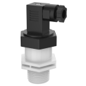
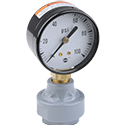
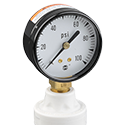
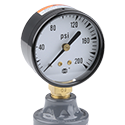
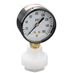

Pressure/Temperature Sensors
Harrington is your trusted supplier of high-quality pressure and temperature sensors. We offer a wide range of styles and manufacturers. Select your product to request a quote, get additional information, and explore purchasing options.
- Icon Process Controls GI-PF 1/4" x 1/2" Truflo® GI Series Gauge Guard, PVDF, NPT, Teflon® PTFE Diaphragmper EA · Sign in for price
- Icon Process Controls GI-PP 1/4" x 1/2" Truflo® GI Series Gauge Guard, Polypropylene, NPT, Teflon® PTFE Diaphragmper EA · Sign in for price

Icon Process Controls LP50-PF-F-0-100 1/2" Truflo® LP50 Series Inline Pressure Transmitter, PVDF, FNPT, Viton® Seals, Hirschmann DIN, Ceramic Diaphragm, 0 - 100 psi Rangeper EA · Sign in for price- Icon Process Controls LP50-PF-F-0-150 1/2" Truflo® LP50 Series Inline Pressure Transmitter, PVDF, FNPT, Viton® Seals, Hirschmann DIN, Ceramic Diaphragm, 0 - 150 psi Rangeper EA · Sign in for price
- Icon Process Controls LP50-PF-F-0-30 1/2" Truflo® LP50 Series Inline Pressure Transmitter, PVDF, FNPT, Viton® Seals, Hirschmann DIN, Ceramic Diaphragm, 0 - 30 psi Rangeper EA · Sign in for price
- Icon Process Controls LP50-PF-F-0-50 1/2" Truflo® LP50 Series Inline Pressure Transmitter, PVDF, FNPT, Viton® Seals, Hirschmann DIN, Ceramic Diaphragm, 0 - 50 psi Rangeper EA · Sign in for price
- Icon Process Controls LP50-PF-M-0-100 1/2" Truflo® LP50 Series Inline Pressure Transmitter, PVDF, MNPT, Viton® Seals, Hirschmann DIN, Ceramic Diaphragm, 0 - 100 psi Rangeper EA · Sign in for price
- Icon Process Controls LP50-PF-M-0-150 1/2" Truflo® LP50 Series Inline Pressure Transmitter, PVDF, MNPT, Viton® Seals, Hirschmann DIN, Ceramic Diaphragm, 0 - 150 psi Rangeper EA · Sign in for price
- Icon Process Controls LP50-PF-M-0-30 1/2" Truflo® LP50 Series Inline Pressure Transmitter, PVDF, MNPT, Viton® Seals, Hirschmann DIN, Ceramic Diaphragm, 0 - 30 psi Rangeper EA · Sign in for price
- Icon Process Controls LP50-PF-M-0-50 1/2" Truflo® LP50 Series Inline Pressure Transmitter, PVDF, MNPT, Viton® Seals, Hirschmann DIN, Ceramic Diaphragm, 0 - 50 psi Rangeper EA · Sign in for price
- Icon Process Controls LP50-PP-F-0-100 1/2" Truflo® LP50 Series Inline Pressure Transmitter, Polypropylene, FNPT, Viton® Seals, Hirschmann DIN, Ceramic Diaphragm, 0 - 100 psi Rangeper EA · Sign in for price
- Icon Process Controls LP50-PP-F-0-150 1/2" Truflo® LP50 Series Inline Pressure Transmitter, Polypropylene, FNPT, Viton® Seals, Hirschmann DIN, Ceramic Diaphragm, 0 - 150 psi Rangeper EA · Sign in for price
- Icon Process Controls LP50-PP-F-0-30 1/2" Truflo® LP50 Series Inline Pressure Transmitter, Polypropylene, FNPT, Viton® Seals, Hirschmann DIN, Ceramic Diaphragm, 0 - 30 psi Rangeper EA · Sign in for price
- Icon Process Controls LP50-PP-F-0-50 1/2" Truflo® LP50 Series Inline Pressure Transmitter, Polypropylene, FNPT, Viton® Seals, Hirschmann DIN, Ceramic Diaphragm, 0 - 50 psi Rangeper EA · Sign in for price
- Icon Process Controls LP50-PP-M-0-100 1/2" Truflo® LP50 Series Inline Pressure Transmitter, Polypropylene, MNPT, Viton® Seals, Hirschmann DIN, Ceramic Diaphragm, 0 - 100 psi Rangeper EA · Sign in for price
- Icon Process Controls LP50-PP-M-0-150 1/2" Truflo® LP50 Series Inline Pressure Transmitter, Polypropylene, MNPT, Viton® Seals, Hirschmann DIN, Ceramic Diaphragm, 0 - 150 psi Rangeper EA · Sign in for price
- Icon Process Controls LP50-PP-M-0-30 1/2" Truflo® LP50 Series Inline Pressure Transmitter, Polypropylene, MNPT, Viton® Seals, Hirschmann DIN, Ceramic Diaphragm, 0 - 30 psi Rangeper EA · Sign in for price
- Icon Process Controls LP50-PP-M-0-50 1/2" Truflo® LP50 Series Inline Pressure Transmitter, Polypropylene, MNPT, Viton® Seals, Hirschmann DIN, Ceramic Diaphragm, 0 - 50 psi Rangeper EA · Sign in for price
- Icon Process Controls LP50-SS-M-0-100 1/4" Truflo® LP50 Series Inline Pressure Transmitter, 316L Stainless Steel, MNPT, Viton® Seals, Hirschmann DIN, Ceramic Diaphragm, 0 - 100 psi Rangeper EA · Sign in for price
- Icon Process Controls LP50-SS-M-0-150 1/4" Truflo® LP50 Series Inline Pressure Transmitter, 316L Stainless Steel, MNPT, Viton® Seals, Hirschmann DIN, Ceramic Diaphragm, 0 - 150 psi Rangeper EA · Sign in for price
- Icon Process Controls LP50-SS-M-0-30 1/4" Truflo® LP50 Series Inline Pressure Transmitter, 316L Stainless Steel, MNPT, Viton® Seals, Hirschmann DIN, Ceramic Diaphragm, 0 - 30 psi Rangeper EA · Sign in for price
- Icon Process Controls LP50-SS-M-0-50 1/4" Truflo® LP50 Series Inline Pressure Transmitter, 316L Stainless Steel, MNPT, Viton® Seals, Hirschmann DIN, Ceramic Diaphragm, 0 - 50 psi Rangeper EA · Sign in for price

Series MTG, TUFF GUARD™ Mini Gauge Guard Isolator Assembly, 1/4" Vented FPT Instrument Port, 1/4" FPT Process Inlet Port, PTFE/FKM Diaphragm, CPVC Body, With Wika 212.53 Gauge, 0 - 15 PSIper EA · Sign in for price
Series MTG, TUFF GUARD™ Mini Gauge Guard Isolator Assembly, 1/4" Vented FPT Instrument Port, 1/4" FPT Process Inlet Port, PTFE/FKM Diaphragm, Natural Polypropylene Body, With Wika 212.53 Gauge, 0 - 15 PSIper EA · Sign in for price
Series MTG, TUFF GUARD™ Mini Gauge Guard Isolator Assembly, 1/4" Vented FPT Instrument Port, 1/4" FPT Process Inlet Port, PTFE/FKM Diaphragm, PVC Body, With Wika 212.53 Gauge, 0 - 15 PSIper EA · Sign in for price
Series MTG, TUFF GUARD™ Mini Gauge Guard Isolator Assembly, 1/4" Vented FPT Instrument Port, 1/4" FPT Process Inlet Port, PTFE/FKM Diaphragm, PVDF Body, With Wika 212.53 Gauge, 0 - 15 PSIper EA · Sign in for price- Series MTG, TUFF GUARD™ Mini Gauge Guard Isolator Assembly, 1/4" Vented FPT Instrument Port, 1/4" FPT Process Inlet Port, PTFE/FKM Diaphragm, CPVC Body, With Ametek Economy Gauge, 0 - 15 PSIper EA · Sign in for price
- Series MTG, TUFF GUARD™ Mini Gauge Guard Isolator Assembly, 1/4" Vented FPT Instrument Port, 1/4" FPT Process Inlet Port, PTFE/FKM Diaphragm, Natural Polypropylene Body, With Ametek Economy Gauge, 0 - 15 PSIper EA · Sign in for price
- Series MTG, TUFF GUARD™ Mini Gauge Guard Isolator Assembly, 1/4" Vented FPT Instrument Port, 1/4" FPT Process Inlet Port, PTFE/FKM Diaphragm, PVC Body, With Ametek Economy Gauge, 0 - 15 PSIper EA · Sign in for price
- Series MTG, TUFF GUARD™ Mini Gauge Guard Isolator Assembly, 1/4" Vented FPT Instrument Port, 1/4" FPT Process Inlet Port, PTFE/FKM Diaphragm, PVDF Body, With Ametek Economy Gauge, 0 - 15 PSIper EA · Sign in for price
- Series MTG, TUFF GUARD™ Mini Gauge Guard Isolator Assembly, 1/4" Vented FPT Instrument Port, 1/4" FPT Process Inlet Port, PTFE/FKM Diaphragm, CPVC Body, With Wika 212.53 Gauge, 0 - 30 PSIper EA · Sign in for price
- Series MTG, TUFF GUARD™ Mini Gauge Guard Isolator Assembly, 1/4" Vented FPT Instrument Port, 1/4" FPT Process Inlet Port, PTFE/FKM Diaphragm, Natural Polypropylene Body, With Wika 212.53 Gauge, 0 - 30 PSIper EA · Sign in for price
- Series MTG, TUFF GUARD™ Mini Gauge Guard Isolator Assembly, 1/4" Vented FPT Instrument Port, 1/4" FPT Process Inlet Port, PTFE/FKM Diaphragm, PVC Body, With Wika 212.53 Gauge, 0 - 30 PSIper EA · Sign in for price
- Series MTG, TUFF GUARD™ Mini Gauge Guard Isolator Assembly, 1/4" Vented FPT Instrument Port, 1/4" FPT Process Inlet Port, PTFE/FKM Diaphragm, PVDF Body, With Wika 212.53 Gauge, 0 - 30 PSIper EA · Sign in for price
- Series MTG, TUFF GUARD™ Mini Gauge Guard Isolator Assembly, 1/4" Vented FPT Instrument Port, 1/4" FPT Process Inlet Port, PTFE/FKM Diaphragm, CPVC Body, With Ametek Economy Gauge, 0 - 30 PSIper EA · Sign in for price
- Series MTG, TUFF GUARD™ Mini Gauge Guard Isolator Assembly, 1/4" Vented FPT Instrument Port, 1/4" FPT Process Inlet Port, PTFE/FKM Diaphragm, Natural Polypropylene Body, With Ametek Economy Gauge, 0 - 30 PSIper EA · Sign in for price
- Series MTG, TUFF GUARD™ Mini Gauge Guard Isolator Assembly, 1/4" Vented FPT Instrument Port, 1/4" FPT Process Inlet Port, PTFE/FKM Diaphragm, PVC Body, With Ametek Economy Gauge, 0 - 30 PSIper EA · Sign in for price
- Series MTG, TUFF GUARD™ Mini Gauge Guard Isolator Assembly, 1/4" Vented FPT Instrument Port, 1/4" FPT Process Inlet Port, PTFE/FKM Diaphragm, PVDF Body, With Ametek Economy Gauge, 0 - 30 PSIper EA · Sign in for price
- Series MTG, TUFF GUARD™ Mini Gauge Guard Isolator Assembly, 1/4" Vented FPT Instrument Port, 1/4" FPT Process Inlet Port, PTFE/FKM Diaphragm, CPVC Body, With Wika 212.53 Gauge, 0 - 60 PSIper EA · Sign in for price
- Series MTG, TUFF GUARD™ Mini Gauge Guard Isolator Assembly, 1/4" Vented FPT Instrument Port, 1/4" FPT Process Inlet Port, PTFE/FKM Diaphragm, Natural Polypropylene Body, With Wika 212.53 Gauge, 0 - 60 PSIper EA · Sign in for price